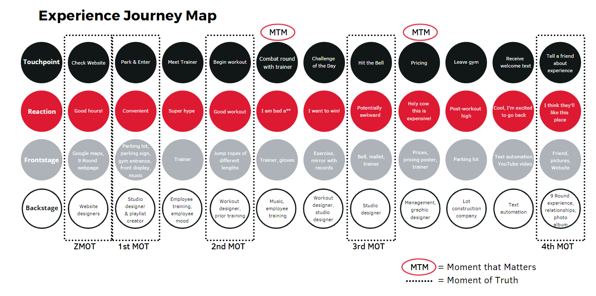
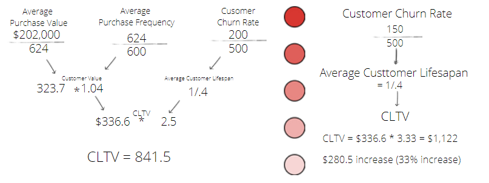
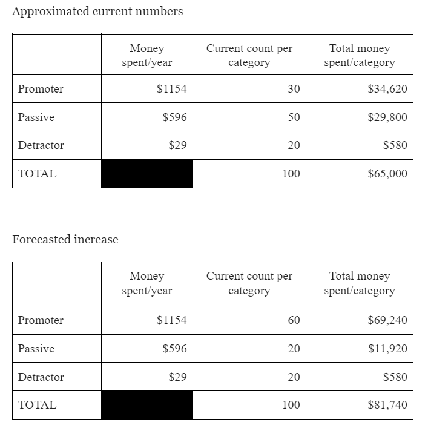

Introduction
For this project, my team worked closely with 9Round Fitness, a kickboxing fitness chain with a location in Orem, UT. By using several data gathering techniques, my team determined that user needs are as follows: Customers need a structured workout experience that is efficient and enjoyable in a safe environment because they have a desire to improve their overall health and increase their self-confidence while managing a busy day-to-day life. To better meet these needs, we followed the design thinking process to generate possible solutions for 9Round Orem to implement.
Data Gathering
We used the following methods to collect data:
- Site Observations
- Our team observed as non-participants, overtly observing how the gym functions.
- We were able to get a feel for the gym atmosphere and 9Round workout experience.
- Customer Interviews
- We applied both the snowball method and convenience sampling to find customers to interview.
- Several interviews were conducted using directed storytelling, others through an interview guide.
- Personal Participation
- One team member completed a walkthrough with a trainer, another participated in the free trial workout, and I completed a 2-week trial to experience the gym personally.
- Triangulation Techniques (additional, non-conventional ways to gain suprising insights)
- Love letter: We asked the manager of 9Round Orem to write a love letter to the gym, which provided us with several new insights like the experience offering's ability to increase participants' self confidence.
- Graffiti Wall: We collected over 20 responses to a single open-ended question by posting it in the gym. The combat round with the trainer was repeatedly praised in customers' responses.
- Photo Study: We showed pictures of different parts of the gym to customers and asked what came to mind with each picture. This provided further insight into which rounds customers like and dislike.
The Customer Journey
Using our insights, my team compiled the following journey map to outline a typical first experience at 9Round Fitness Orem.
 Touchpoints, reactions, and contributors to first time 9Round experience.Our map includes labeled moments of truth as well as moments that matter. Moments of truth are a well-known business term for interactions with a brand or product when customers make decisions about purchasing, whether they like the product, and reviewing the product. Moments that matter are transformative periods of time where the experience provider makes a lasting emotional impression on how the customer feels about them and their relationship with the provider. Our data gathering led us to conclude that the combat round with the trainer and the sales pitch at the end of the first workout are crucial moments in the 9Round member experience.
Combat Round Recommendations
In Pine and Gilmore's book, Experience Economy, they promote the idea of "theme-ing" experience offerings. This entails
T-theming,
H-harmonizing positive cues,
E-eliminating negative cues,
M-mixing in memorabilia, and
E-engaging all five senses.
Why is this important for business? Themed experiences are a contributing factor to deep experiences, where time seems to speed up or slow down, and participants are so engaged they do not have to think about what they are doing. When theme-ing is considered, the touchpoint is well thought out and free from distractions and negative cues.
The trainer-led round was frequently mentioned in interviews and triangulation as the highlight of each workout session. uring our participation and observations, however, we noted that there is no designated area for this round and that members do not know which round number will be trainer-led. We recommend enhancing combat rounds by (1) designing a designated space that feels like a boxing ring and (2) playing music that goes along with the combination. This will help members not only enjoy and remember this aspect of their workout, but also anticipate and engage in a deep experience every time they attend.
By theme-ing the combat round, we anticipate losing 50 less potential users than normal. We also expect to increase the workout quality of current customers. An example of the Customer Lifetime Value is shown below, showing that implementing these changes can increase the value of each customer by 33%.
 Calculations assume 500 current customers with a yearly turnover of 200 customers.Sales Pitch Recommendations
The peak-end rule states that customers remember two aspects of an experience most: the best (or peak) moment of an experience, and the last (or end) moment. Currently, when customers look back on their trial workout experience at 9Round, the peak is likely the trainer-led round, while the end is the sales pitch.
The current phrase used by trainers is “what can I do to get you to sign up today?” This question requires the customer to supply the value of the offering, which they are unable to do following a single workout. This invites negotiation, which many people would not feel comfortable doing, especially with a list of fixed prices and package offerings in front of them. We suggest that trainers take the time to help customers understand what aspects of their transformational experience offering make the value worth the price. To do so, trainers could refer to the fitness goals customers entered with their waiver at the beginning of their workout and identify how the 9Round nutrition portal and workouts can help customers reach their goals. Additionally, trainers can use the In-Body Scanner as a tool to help customers identify their starting point to help them feel like their journey has already begun.
Changing the presentation of membership options will have a twofold effect: It will increase the number of promoters, which increases profit, and it will enable people to better recommend the gym to friends, as they will be well-acquainted with all of 9Round’s offerings.
To demonstrate the change in profit improving the sales pitch will make, we used NPS. We approximated how much money each group of customers (promoters, passives, and detractors) will spend on experiences. Promoters are likely to purchase a yearly subscription, the most expensive package, and additional swag. Passives are likely to purchase a 3-month subscription and the less expensive package. Detractors will stop attending after the free trial workout or the 2-week trial.
The tables below show the increase of 30 customers switching from passives to promoters. This would lead to an income increase of $16,740, or a 25.8% increase.
 Calculations assume 100 current customers.